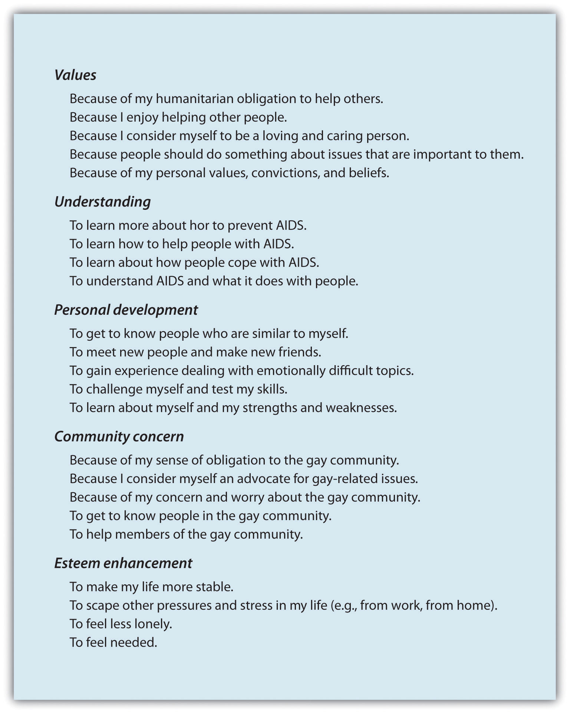

Although we have discussed many of the most important factors, there are still other variables that determine our willingness to help others. These include characteristics of the people who are potentially providing help as well as the ways that others respond to the help they may receive. Let us consider them now.
We have seen that the social situation is a very strong determinant of whether or not we help. But although the effects of personality may not generally be as strong as those of the social context, person variables do matter. Some people are indeed more helpful than others across a variety of situations, and we say that these people have an altruistic or prosocial personalityAn individual difference variable that relates to the likelihood of helping others across many different situations. (Penner, Fritzsche, Craiger, & Freifeld, 1995).Penner, L. A., Fritzsche, B. A., Craiger, J. P., & Freifeld, T. S. (1995). Measuring the prosocial personality. In J. Butcher & C. Speigelberger (Eds.), Advances in personality assessment (Vol. 10, pp. 147–163). Hillsdale, NJ: Lawrence Erlbaum. Try answering the questions posed in Figure 9.7 "Measuring the Altruistic Personality" to see how you stand on this variable.
Figure 9.7 Measuring the Altruistic Personality

This scale measures individual differences in willingness to provide help—the prosocial personality. The scale includes questions on four dimensions of altruism. Adapted from Penner, Fritzsche, Craiger, and Freifeld (1995).Penner, L. A., Fritzsche, B. A., Craiger, J. P., & Freifeld, T. S. (1995). Measuring the prosocial personality. In J. Butcher & C. Speigelberger (Eds.), Advances in personality assessment (Vol. 10, pp. 147–163). Hillsdale, NJ: Lawrence Erlbaum.
The altruistic personality involves both the cognitive and the emotional responses that we experience around others. People with altruistic personalities tend to show empathy and sympathy for others and feel that it is appropriate and right to follow the norm of social responsibility. These people help more people in a wider variety of areas, including providing help to coworkers, donating organs, and volunteering, and also have been found to help more quickly than do people who score lower on these measures (Borman, Penner, Allen, & Motowidlo, 2001; Penner, 2002).Borman, W. C., Penner, L. A., Allen, T. D., & Motowidlo, S. J. (2001). Personality predictors of citizenship performance. International Journal of Selection and Assessment, 9(1–2), 52–69; Penner, L. A. (2002). Dispositional and organizational influences on sustained volunteerism: An interactionist perspective. Journal of Social Issues, 58(3), 447–467. A longitudinal study conducted by Nancy Eisenberg and her colleagues (Eisenberg et al., 1999)Eisenberg, N., Guthrie, I. K., Murphy, B. C., Shepard, S. A., Cumberland, A., & Carlo, G. (1999). Consistency and development of prosocial dispositions: A longitudinal study. Child Development, 70(6), 1360–1372. found that children who were the most helpful when they were measured in their preschool classes also were the most helpful later in childhood and in early adulthood, suggesting that they really were helpful people. People with altruistic personalities seem to be people who have a strong other-concern—they like to be with, to relate to, and to help others.
The altruistic personality is in part heritable. Research has found that identical twins are more similar to each other in both their helping-related emotions (such as empathy) and their actual helping than are fraternal twins, who share only a portion of their genetic makeup (Davis, Luce, & Kraus, 1994).Davis, M. H., Luce, C., & Kraus, S. J. (1994). The heritability of characteristics associated with dispositional empathy. Journal of Personality, 62(3), 369–391.
You may have already asked yourself an important question about helping: Do men or women help more? And perhaps you have answered this question. For instance, you might have decided that women would be more helpful because they are by and large more attuned to the needs of others. Or perhaps you decided that men would be more helpful because helping involves demonstrating bravery and heroicism and men are more likely to desire to be heroes, or at least to look heroic in the eyes of other people.
In fact, on average there are no big differences between men and women in terms of their helping. For instance, in the survey of altruism we discussed earlier in the chapter (http://www.independentsector.org), the percentage of women volunteering (46%) was not significantly different than the percentage of men (42%). Rather, there appears to be a person-by-situation interaction, such that gender differences show up more strongly in some situations than in others. The differences depend not only upon the opportunity to help but also on the type of helping that is required (Becker & Eagly, 2004).Becker, S. W., & Eagly, A. H. (2004). The heroism of women and men. American Psychologist, 59(3), 163–178. In general, men are more likely to help in situations that involve physical strength. If you remember photos and videos taken immediately after the World Trade Center attack in 2001, you’ll probably recall the many images of firefighters and police officers, who were primarily men, engaged in heroic acts of helping.
This does not mean that women are any less helpful—in fact thousands of women helped during and after the World Trade Center attack by tending to the wounded in hospitals, donating blood, raising money for the families of the victims, and helping with the cleanup of the disaster sites. Because women are, on average, more focused on other-concern, they are more likely than men to help in situations that involve long-term nurturance and caring, particularly within close relationships. Women are also more likely than men to engage in community behaviors, such as volunteering in the community or helping families (Becker & Eagly, 2004; Eagly & Becker, 2005).Becker, S. W., & Eagly, A. H. (2004). The heroism of women and men. American Psychologist, 59(3), 163–178; Eagly, A. H., & Becker, S. W. (2005). Comparing the heroism of women and men. American Psychologist, 60(4), 343–344. Helping within the family is done in large part by mothers, sisters, wives, and female friends. (You might ask yourself when you last received a thank-you note from a man!)
Although this type of helping might be less likely to be rewarded with newspaper stories and medals, providing social support and helping connect people serves to help us meet the important goal of relating to others and thus helps improve the quality of our lives. And women are not afraid to help in situations that are dangerous. In fact, women have been found to be as likely as men are to engage in dangerous behaviors such as donating a kidney to others (Becker & Eagly, 2004).Becker, S. W., & Eagly, A. H. (2004). The heroism of women and men. American Psychologist, 59(3), 163–178.
Are the Religious More Altruistic?
Do you think that religious people are more helpful than are people who are less religious? There are plenty of reasons to think that this might be so. After all, every major religion preaches the importance of compassion and helpfulness, and many faith-based organizations help the poor and disadvantaged every year. Religious organizations help provide education, food, clothes, financial support, and other essentials to the needy across the globe.
There is support, based on surveys and questionnaires, that religious people do indeed report being more helpful than the less religious (Penner, 2002).Penner, L. A. (2002). Dispositional and organizational influences on sustained volunteerism: An interactionist perspective. Journal of Social Issues, 58(3), 447–467. For instance, Morgan (1983)Morgan, S. P. (1983). A research note on religion and morality: Are religious people nice people? Social Forces, 61(3), 683–692. found that people who reported that they prayed more often also said that they were more good, friendly, and cooperative toward others. Furrow, King, and White (2004)Furrow, J. L., King, P. E., & White, K. (2004). Religion and positive youth development: Identity, meaning, and prosocial concerns. Applied Developmental Science, 8(1), 17–26. found a significant positive relationship between religiousness and prosocial concerns such as empathy, moral reasoning, and responsibility in urban high school students. And Benson, Donahue, and Erickson (1989)Benson, P. L., Donahue, M. J., & Erickson, J. A. (Eds.). (1989). Adolescence and religion: A review of the literature from 1970 to 1986. Research in the Social Scientific Study of Religion, 1, 153–181. found that adolescents who said that they were more religious were also more likely to have been involved in a volunteer service project in the last year.
Batson and his colleagues (1989)Batson, C. D., Oleson, K. C., Weeks, J. L., Healy, S. P., Reeves, P. J., Jennings, P., & Brown, T. (1989). Religious prosocial motivation: Is it altruistic or egoistic? Journal of Personality and Social Psychology, 57(5), 873–884. wondered if religious people were actually more likely to help or if they simply indicated that they would be on questionnaires. To test this question, they recruited college students and first asked them to report on their religious beliefs. On the basis of these responses, Batson categorized the students into one of four groups:
Then Batson and his colleagues asked the participants whether or not they would be willing to volunteer their time by helping a woman in need or by walking in a walkathon for a charity. However, in each case Batson also gave one half of the participants a possible excuse for not helping, by informing them that a number of other students had already volunteered to help the woman or that they would have to complete a difficult physical exam before they could be in the walkathon.
The researchers found that the externally religious were not more likely to help overall and were actually less likely to help when there was an easy excuse not to. It seems that the externally religious were not really altruistic at all. The internally religious participants seemed somewhat more altruistic—they helped more when the helping was easy, but they did not continue to help when the task got difficult. However, Batson and his team found that the quest-oriented students were the true altruists—they volunteered to help even when doing so required engaging in some difficult exercise and continued to help even when there was an easy excuse not to.
Although most studies investigating the role of religion on altruism have been correlational, there is also some experimental research showing that that activating symbols relating to religion causes increased altruism. Shariff and Norenzayan (2007)Shariff, A. F., & Norenzayan, A. (2007). God is watching you: Priming God concepts increases prosocial behavior in an anonymous economic game. Psychological Science, 18(9), 803–809. showed their research participants religious words such as divine, God, sacred, and prophet and then later asked them to contribute some money to a charity. The participants who had seen the religious words were more likely to donate money to an anonymous recipient than were a control group of people who had been exposed to nonreligious control words. However, religion was not the only concept that increased helping. Similar increases in altruism were found when people were shown words related to civil duty, such as civic, jury, court, police, and contract.
In summary, when surveyed, religious people say that they are more helpful than are the nonreligious, but whether they really help when helping conflicts with self-interest seems to depend on what type of religious person they are. People who are religious for personal reasons related to self-concern generally are not more helpful. On the other hand, those who are more quest-oriented—those who really believe that helping is an important part of religious experience—are likely to help even when doing so requires effort. Furthermore, religion is not the only thing that makes us helpful. Being reminded of other social norms, such as our civil responsibility to others, also makes us more helpful.
We do not help everyone equally—some people just seem to be more worthy of help than others. Our cognitions about people in need matter as do our emotions toward them. For one, our perception of the amount of the need is important. Bickman and Kamzan (1973)Bickman, L., & Kamzan, M. (1973). The effect of race and need on helping behavior. Journal of Social Psychology, 89(1), 73–77. found that people were considerably more reluctant to help someone requesting money in a grocery store to buy some cookie dough (a relative luxury item) than they were to help someone requesting money to buy milk (which seems more necessary).
In addition to attempting to determine whether the help is really needed, we also tend to determine whether people are deserving of the help. We tend to provide less help to people who seem to have brought on their problems themselves or who don’t seem to be working very hard to solve them on their own than we do to people who need help as a result of events that seem to be out of their control. Imagine, for instance, that a student in your class asks to borrow your class notes to prepare for an exam. And then imagine if the student said, “I just can’t take good notes—I attend every class, and I really try, but I just can’t do it.” I’m guessing that you might be willing to help this student. On the other hand, imagine that the student said, “Well, I miss class a lot because I don’t feel like coming, and even when I’m here I don’t bother to take notes every day.” I bet you’d be less likely to help this person, who doesn’t seem to be trying very hard.
Supporting this idea, Dooley (1995)Dooley, P. A. (1995). Perceptions of the onset controllability of AIDS and helping judgments: An attributional analysis. Journal of Applied Social Psychology, 25(10), 858–869. had students read scenarios about a person who had been diagnosed with AIDS. Participants who learned that the person had contracted the disease through a blood transfusion felt more empathy and pity for the person, and also expressed a greater desire to help them, than did participants who believed that the disease was caused by unprotected sex or by illicit drug use. One reason we may be particularly likely to help victims of hurricanes and other natural disasters, then, is that we see that these people did not cause their own problems. Those who do argue against helping these victims may well take the opposite position because they believe that the individuals deserved what they got (“they should have known better than to live there.”)
It has been argued that a fundamental difference between individuals who hold politically conservative views and those who hold politically liberal views is how they perceive the necessity or moral responsibility of helping others, and that this relates to how they perceive the causes of people’s outcomes. Consider people who appear to need help because they have inadequate food, shelter, or health care, for example. Liberals tend to attribute these outcomes more externally, blaming them on unjust social practices and societal structures that create inequalities. Because they are likely to believe that the people do not deserve their unfortunate situation, they are likely to favor spending on social programs designed to help these people. Conservatives, on the other hand, are more likely to hold just world beliefsThe belief that people get what they deserve in life.—beliefs that people get what they deserve in life (Lerner, 1980).Lerner, M. (1980). The belief in a just world: A fundamental delusion. New York, NY: Plenum. Conservatives make more internal attributions for negative outcomes, believing that the needs are caused by the lack of effort or ability on the part of the individual. They are therefore less likely than liberals to favor government spending on welfare and other social programs designed to help people (Kluegel & Smith, 1986; Skitka, 1999).Kluegel, J. R., & Smith, E. R. (1986). Beliefs about inequality: Americans’ views of what is and what ought to be. Hawthorne, NY: Aldine de Gruyter; Skitka, L. J. (1999). Ideological and attributional boundaries on public compassion: Reactions to individuals and communities affected by a natural disaster. Personality and Social Psychology Bulletin, 25(7), 793–808.

Political conservatives, such as U.S. Representative Eric Cantor of Virginia, tend to believe that people deserve what they get and that the federal government should not spend money on health care and other social programs. Liberals, on the other hand, such as U.S. Representative Raúl Grijalva of Arizona, tend to blame poverty and inequality on external factors such as unjust social practices. They are more likely to promote policies designed to help the needy.
To this point in the chapter we have proceeded as if helping is always a good thing—that people need to receive help and that they are appreciative of and thankful to the people who help them. But perhaps this is not always true. We haven’t yet considered the cognitive and affective reactions of the people who are receiving the help. Can you remember a time when somebody tried to help you make a decision or perform a task, but you didn’t really want the help? How did that make you think and feel about yourself? Maybe there are costs involved in receiving help, just as there are in giving it.
Although people who receive help often really need the help and may indeed feel appreciative and grateful to those who help them, receiving help may also have some negative consequences. When we help another person, it indicates that we have enough resources that we can afford to give some of them to the recipient; it also indicates that the recipient is dependent on our goodwill. Thus helping creates a status disparity in the sense that the helper is seen as having higher status than the person being helped. This inequality makes giving help an indication of high status and power, and receiving help a potentially self-threatening experience for the recipient (Nadler, 2002; Nadler & Halabi, 2006).Nadler, A. (2002). Inter-group helping relations as power relations: Maintaining or challenging social dominance between groups through helping. Journal of Social Issues, 58(3), 487–502; Nadler, A., & Halabi, S. (2006). Intergroup helping as status relations: Effects of status stability, identification, and type of help on receptivity to high-status group’s help. Journal of Personality and Social Psychology, 91(1), 97–110. There are a variety of emotions that help recipients might feel in these cases, including embarrassment and worry that they are, or are seen as, incompetent or dependent (DePaulo, Brown, Ishii, & Fisher, 1981; Nadler, Fisher, & Itzhak, 1983).DePaulo, B. M., Brown, P. L., Ishii, S., & Fisher, J. D. (1981). Help that works: The effects of aid on subsequent task performance. Journal of Personality and Social Psychology, 41(3), 478–487; Nadler, A., Fisher, J. D., & Itzhak, S. B. (1983). With a little help from my friend: Effect of single or multiple act aid as a function of donor and task characteristics. Journal of Personality and Social Psychology, 44(2), 310–321. Research has found that people frequently respond negatively when they receive help and may in some cases even prefer to endure hardships rather than to seek out help (Nadler, 1991).Nadler, A. (Ed.). (1991). Help-seeking behavior: Psychological costs and instrumental benefits. Thousand Oaks, CA: Sage. Receiving help, then, can be a potential blow to our self-esteem.
The negative feelings that we experience when receiving help are likely to be particularly strong when the recipient feels that the implication of the helping is that they are unable to care for themselves. In these cases the help is perceived as being dependency oriented (Nadler et al., 1983).Nadler, A., Fisher, J. D., & Itzhak, S. B. (1983). With a little help from my friend: Effect of single or multiple act aid as a function of donor and task characteristics. Journal of Personality and Social Psychology, 44(2), 310–321. When the helper takes control of the situation and solves the problem facing the individual, leaving little left for the individual to accomplish on his or her own, the behavior may be seen as indicating that the individual cannot help herself. The potential recipients of help are likely to reject offers of dependency-oriented help, refrain from seeking it, and react negatively when it is offered.
Another situation in which people may not appreciate the help they are receiving is when that help comes on the basis of one’s presumed need. For instance Blaine, Crocker, and Major (1995)Blaine, B., Crocker, J., & Major, B. (1995). The unintended negative consequences of sympathy for the stigmatized. Journal of Applied Social Psychology, 25(10), 889–905. found that people who imagined that they had been hired for a job because they were disabled experienced lower self-esteem and felt that they were less likely to work hard on the job than those who imagined that they were hired on the basis of their job qualifications. You can see that government programs, such as those based on affirmative action, although likely to be helpful for the people who receive them, may also lead those people to feel dependent on others.
In contrast to dependency-oriented help, autonomy-oriented help is partial and temporary and provides information to the other, for instance, by giving instructions or guidance or providing ideas about how to help oneself. Autonomy-oriented help reflects the helper’s view that, given the appropriate tools, recipients can help themselves (Brickman, 1982).Brickman, P. (1982). Models of helping and coping. American Psychologist, 37(4), 368–384. Autonomy-oriented help allows help recipients to retain their independence despite their reliance on the more resourceful helper. This type of help is less likely to clash with help recipients’ view of themselves as capable people who can help themselves.
There are also observed gender differences in the willingness to seek help. Boys and men are less likely to ask for help overall, perhaps in part because they feel that asking for help indicates to others that they are less capable of handling their own affairs or that they have low status (Addis & Mahalik, 2003; Mansfield, Addis, & Mahalik, 2003).Addis, M. E., & Mahalik, J. R. (2003). Men, masculinity, and the contexts of help seeking. American Psychologist, 58(1), 5–14; Mansfield, A. K., Addis, M. E., & Mahalik, J. R. (2003). “Why won’t he go to the doctor?”: The psychology of men’s help seeking. International Journal of Men’s Health, 2(2), 93–109.
In short, when we help others we must be careful that we do it in a way that allows them to maintain their independence and that reminds them that they are still able to help themselves. This type of help will be more easily accepted and more beneficial in the long run.
Although almost every culture has a social responsibility norm, the strength of those norms varies across cultures. And these differences relate well to what we know about individualism and collectivism. In one study, Miller, Bersoff, and Harwood (1990)Miller, J. G., Bersoff, D. M., & Harwood, R. L. (1990). Perceptions of social responsibilities in India and in the United States: Moral imperatives or personal decisions? Journal of Personality and Social Psychology, 58(1), 33–47. found that children and adults in the United States (a Western and therefore individualistic culture) were less likely than children and adults in India (an Eastern and therefore collectivistic culture) to believe that people have an obligation to provide assistance to others. The Indian respondents believed that there was an absolute requirement to help, whereas the Americans offered their helping more selectively, even to their friends. Similarly, Baron and Miller (2000)Baron, J., & Miller, J. G. (2000). Limiting the scope of moral obligations to help: A cross-cultural investigation. Journal of Cross-Cultural Psychology, 31(6), 703–725. found that Indian students were more likely than U.S. students to view donating bone marrow to save someone’s life as morally required, whereas U.S. students were more likely than Indian students to say that donating was a decision that the potential donor had to make himself or herself.
Perlow and Weeks (2002)Perlow, L., & Weeks, J. (2002). Who’s helping whom? Layers of culture and workplace behavior. Journal of Organizational Behavior, 23(Spec. Issue), 345–361. found that there were substantial cultural differences in the behavior of software engineers working at similar companies and doing the same type of work in the United States and in India. Engineers at the American site were more focused on exchange and reciprocity—they tended to provide help to others only if they thought those people could be helpful to them in the future. The engineers at the Indian company, on the other hand, were more willing to help anyone who seemed to need help, regardless of the potential for a return. Perlow and Weeks interpreted these differences in terms of different ways of meeting the goal of self-interest. Among the Americans, helping was seen as an unwanted interruption on the time of the individual, and thus helping was not personally beneficial. At the Indian company, however, helping was seen more as an opportunity for improving one’s skills by helping. These results suggest that helping, at least in Western contexts such as the United States, can be increased if it is framed to be perceived as important toward achieving one’s goals.
One important difference between Eastern and Western cultures is that the importance of self-concern (versus other-concern) is higher in the latter. In fact, the strong individualistic norms in cultures such as the United States make it sometimes inappropriate to try to help in cases where we do not have a personal interest. Rebecca Ratner and Dale Miller (2001)Ratner, R. K., & Miller, D. T. (2001). The norm of self-interest and its effects on social action. Journal of Personality and Social Psychology, 81(1), 5–16. had participants read a scenario in which a governmental funding agency was planning to reduce funding for research regarding a disease. The disease was said to affect only women or only men. Then the participants were asked to indicate both whether they were opposed to the reduction in funding and how comfortable they would be in attending a meeting to protest the funding changes.
In terms of their attitudes toward the reduction in funding, there were no significant gender differences. Men thought that the funding should be maintained even when the disease only affected women, and vice versa. However, as you can see in Figure 9.8 "Effects of Standing on Feelings of Comfort in Taking Action", when asked how comfortable they would feel attending a meeting protesting the funding decreases, significant differences occurred. The men predicted that they would feel less comfortable attending a meeting to protest the funding reductions when the disease only affected women, and the women predicted that they would feel less comfortable attending a meeting to protest the funding reductions when the disease only affected men.
Figure 9.8 Effects of Standing on Feelings of Comfort in Taking Action

This figure represents participants’ ratings of how comfortable they would be attending a meeting supporting the attempt to prevent funding reductions for a disease. Suggesting that a norm of self-interest is necessary to get involved, both men and women were less likely to feel comfortable arguing for a position that does not influence them personally. Data from Ratner and Miller (2001, Experiment 3).Ratner, R. K., & Miller, D. T. (2001). The norm of self-interest and its effects on social action. Journal of Personality and Social Psychology, 81(1), 5–16.
Ratner and Miller argued that in Western cultures there is a norm of self-interest that influences whether or not we feel that we can be involved in actions designed to help others. In short, people are not expected to volunteer for, or to be involved in, causes that do not affect them personally. It is simply inappropriate to lend help to others unless the person is personally involved in the issue and thus stands to benefit. Indeed, participants in another study by Ratner and Miller reacted more negatively to an individual’s altruistic behaviors when they did not appear consistent with his or her self-interest.
There is still another example of the subtle role of self-interest in helping. Did you ever notice that many people who are looking for contributions to a cause do not ask directly but rather ask that you purchase something from them, allowing them to keep the profit from the sale? Bake sales, car washes, and address sticker and magazine subscription charity campaigns are all examples of this. Of course, it would be more profitable for the charity if people simply gave the same amount of money rather than taking the gift—and perhaps the people who are making the purchases would prefer not to have to buy the product anyway.
Is it possible that people are simply more comfortable making donations in exchange for a product than they are simply giving money to a charity? Research by John Holmes and his colleagues (Holmes, Miller, & Lerner, 2002)Holmes, J. G., Miller, D. T., & Lerner, M. J. (2002). Committing altruism under the cloak of self-interest: The exchange fiction. Journal of Experimental Social Psychology, 38(2), 144–151. has supported this idea, finding that people are more likely to help when they can pretend that they are acting in their own self-interest. In one study, Holmes and his team found that students were more likely to donate money to a needy charity when they were offered a small candle in return for their donation than when they were not offered the candle. However, and suggesting that they didn’t really care about the candle that much, when the request was to contribute to a charity that did not seem that needy, contributions were smaller overall but were not greater when the candle was offered than when it was not. Again, it seems that people feel more comfortable being altruistic when they can pretend that they are really helping themselves—not violating the norm of self-interest.
Now that we have a fundamental understanding of the variables that influence the likelihood that we will help others, let’s spend some time considering how we might use this information in our everyday life to try to become more helpful ourselves and to encourage those around us to do the same. In doing so we will make use of many of the principles of altruism that we have discussed in this chapter.
First, we need to remember that not all helping is based on other-concern—self-concern is important. People help in part because it makes them feel good, and therefore anything that we can do to increase the benefits of helping and to decrease the costs of helping would be useful. Consider, for instance, the research of Mark Snyder, who has extensively studied the people who volunteer to help other people who are suffering from AIDS (Snyder & Omoto, 2004; Snyder, Omoto, & Lindsay, 2004).Snyder, M., & Omoto, A. M. (Eds.). (2004). Volunteers and volunteer organizations: Theoretical perspectives and practical concerns. San Francisco, CA: Jossey-Bass; Snyder, M., Omoto, A. M., & Lindsay, J. J. (Eds.). (2004). Sacrificing time and effort for the good of others: The benefits and costs of volunteerism. New York, NY: Guilford Press. To help understand which volunteers were most likely to continue to volunteer over time, Snyder and his colleagues (Omoto & Snyder, 1995)Omoto, A. M., & Snyder, M. (1995). Sustained helping without obligation: Motivation, longevity of service, and perceived attitude change among AIDS volunteers. Journal of Personality and Social Psychology, 68(4), 671–686. asked the AIDS volunteers to indicate why they volunteered. As you can see in Figure 9.9 "Reasons for Volunteering to Help AIDS Victims", the researchers found that the people indicated that they volunteered for many different reasons, and these reasons fit well with our assumptions about human nature—they involve both self-concern as well as other-concern.
Figure 9.9 Reasons for Volunteering to Help AIDS Victims
From Omoto and Snyder (1995).Omoto, A. M., & Snyder, M. (1995). Sustained helping without obligation: Motivation, longevity of service, and perceived attitude change among AIDS volunteers. Journal of Personality and Social Psychology, 68(4), 671–686.
Omoto and Snyder (1995)Omoto, A. M., & Snyder, M. (1995). Sustained helping without obligation: Motivation, longevity of service, and perceived attitude change among AIDS volunteers. Journal of Personality and Social Psychology, 68(4), 671–686. found that the volunteers were more likely to continue their volunteer work if their reasons for volunteering involved self-related activities, such as understanding, personal development, or esteem enhancement. The volunteers who felt that they were getting something back from their work were likely to stay involved. In addition, Snyder and his colleagues found that that people were more likely to continue volunteering when their existing social support networks were weak. This result suggests that some volunteers were using the volunteer opportunity to help them create better social connections (Omoto & Snyder, 1995).Omoto, A. M., & Snyder, M. (1995). Sustained helping without obligation: Motivation, longevity of service, and perceived attitude change among AIDS volunteers. Journal of Personality and Social Psychology, 68(4), 671–686. On the other hand, the volunteers who reported experiencing negative reactions about their helping from their friends and family members, which made them feel embarrassed, uncomfortable, and stigmatized for helping, were also less likely to continue working as volunteers (Snyder, Omoto, & Crain, 1999).Snyder, M., Omoto, A. M., & Crain, A. L. (1999). Punished for their good deeds: Stigmatization of AIDS volunteers. American Behavioral Scientist, 42(7), 1175–1192.
These results again show that people will help more if they see it as rewarding. So if you want to get people to help, try to increase the rewards of doing so, for instance by enhancing their mood or by offering incentives. Simple things, such as noticing, praising, and even labeling helpful behavior can be enough. When children are told that they are “kind and helpful children,” they contribute more of their prizes to other children (Grusec, Kuczynski, Rushton, & Simutis, 1978).Grusec, J. E., Kuczynski, L., Rushton, J. P., & Simutis, Z. M. (1978). Modeling, direct instruction, and attributions: Effects on altruism. Developmental Psychology, 14(1), 51–57. Rewards work for adults too: People were more likely to donate to charity several weeks after they were described by another person as being “generous” and “charitable” people (Kraut, 1973).Kraut, R. E. (1973). Effects of social labeling on giving to charity. Journal of Experimental Social Psychology, 9(6), 551–562. In short, once we start to think of ourselves as helpful people, self-perception takes over and we continue to help.
The nations and states that have passed Good Samaritan laws realize the importance of self-interest: If people must pay fines or face jail sentences if they don’t help, then they are naturally more likely to help. And the programs in many schools, businesses, and other institutions that encourage students and workers to volunteer by rewarding them for doing so are also effective in increasing volunteering (Clary et al., 1998; Clary, Snyder, & Stukas, 1998).Clary, E. G., Snyder, M., Ridge, R. D., Copeland, J., Stukas, A. A., Haugen, J., & Miene, P. (1998). Understanding and assessing the motivations of volunteers: A functional approach. Journal of Personality and Social Psychology, 74(6), 1516–1530; Clary, E. G., Snyder, M., & Stukas, A. (1998). Service-learning and psychology: Lessons from the psychology of volunteers’ motivations. Washington, DC: American Psychological Association.
Helping also occurs in part because of other-concern. We are more likely to help people we like and care about, we feel similar to, and with whom we experience positive emotions. Therefore, anything that we can do to increase our connections with others will likely increase helping. We must work to encourage ourselves, our friends, and our children to interact with others—to help them meet and accept new people and to instill a sense of community and caring in them. These social connections will make us feel closer to others and increase the likelihood we will help them. We must also work to install the appropriate norms in our children. Kids must be taught not to be selfish and to value the norms of sharing and altruism.
One way to increase our connection with others is to make those people highly salient and personal. Charities and other organizations that seek to promote helping understand this and do the best they can to individualize the people they are asking us to help. When we see a single person suffering, we naturally feel strong emotional responses to that person. And, as we have seen, the emotions that we feel when others are in need are powerful determinants of helping. In fact, Paul Slovic (2007)Slovic, P. (2007). “If I look at the mass I will never act”: Psychic numbing and genocide. Judgment and Decision Making, 2(2), 79–95. found that people are simply unable to identify with statistical and abstract descriptions of need because they do not feel emotions for these victims in the same way they do for individuals. They argued that when people seem completely oblivious or numb to the needs of millions of people who are victims of genocide, hurricanes, and other atrocities, it is because the victims are presented as statistics rather than as individual cases. As Joseph Stalin, the Russian dictator who executed millions of Russians, put it, “A single death is a tragedy, a million deaths is a statistic.”
We can also use what we have learned about helping in emergency situations to increase the likelihood of responding. Most importantly, we must remember how strongly pluralistic ignorance can influence the interpretation of events and how quickly responsibility can be diffused among the people present at an emergency. Therefore, in emergency situations we must attempt to counteract pluralistic ignorance and diffusion of responsibility by remembering that others do not necessarily know more than we do. Depend on your own interpretation—don’t simply rely on your assumptions about what others are thinking and don’t just assume that others will do the helping.
We must be sure to follow the steps in Latané and Darley’s model, attempting to increase helping at each stage. We must make the emergency noticeable and clearly an emergency, for instance, by yelling out: “This is an emergency! Please call the police! I need help!” And we must attempt to avoid the diffusion of responsibility, for instance, by designating one individual to help: “You over there in the red shirt, please call 911 now!”